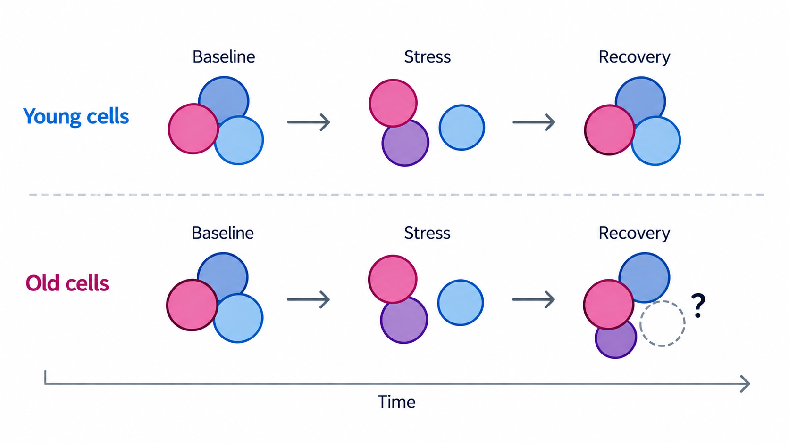

DYNAMICS
Dynamic assembly states
How do protein assembly-state dynamics change with age?
Protein interactions are dynamic. As cells respond to changes in their environment, proteins can exchange partners, assemble into new complexes, or leave existing ones, potentially changing their functions without any change in protein abundance.
We want to understand how this remodeling of protein assembly states changes with age. Do older cells reorganize their interaction networks differently when challenged? And what can these differences teach us about the decline of proteostasis with aging?
To capture these processes, we are expanding SEC-MX to follow protein assembly states across multiple time points. We will use cellular stress and recovery as a dynamic model to reveal how interaction networks reorganize over time, and how this capacity differs between young and old cells.
